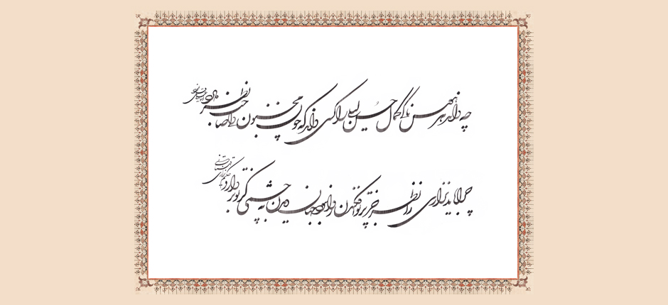

Music & Melodies of the Persian Ismaili Qasideh
Introduction | Modes | Melodies | Musical Instruments | Qasideh Tradition | Qasideh Collection
Qasideh | Bi dast awardah-am yari ki ruyʾi chun qamar darad

Original calligraphy by Ustad Esmaili Mood from Iran inspired by verses 4 and 8 from qasideh Ruyʾi chun qamar.Listen to Bi dast awardah-am yari ki ruyʾi chun qamar darad:
| Translation | Transliteration | Lyrics |
|---|---|---|
| I have found a beloved who has a face like the moon; my beloved has a sweet mouth and lips like sugar. | Bi dast āwardah-am yārī ki rūyʾī chun qamar dārad Dahānī chun lab-i shīrīn labānī chun shikar dārad | به دست آوردهام ياری که رويی چون قمر دارد دهانی چون لبِ شيرین، لبانی چون شکر دارد |
| Where is Jesus the son of Mary? Tell him to come and witness the miracle of breath now! It is as if there is a hidden life in every single letter uttered by the Beloved! | Kujā shud ʿĪsī-yi Maryam bīyā gū muʿjiz-i dam bīn Ki dar har ḥarf pindārī nahān jānī digar dārad | کجا شد عيسی مريم بيا گو معجزِ دم بين که در هر حرف پنداری نهان جانی دگر دارد |
| The moment I clapped eyes on him, I was bound from head to toe. I am passionate for him alone in the world and I do not know whom he cares for. | Naẓar tā bar way afkandam zi sar tā pāy dar bandam Sar-i ū dāram az ʿālam nadānam ū chi sar dārad | نظر تا بر وی افکندم ز سر تا پای در بندم سرِ او دارم از عالم ندانم او چه سر دارد |
| How can any lustful person know the perfection of the beauty of Laylī? Only someone with the eye of Majnūn could know this. | Chi dānad har hawasnākī kamāl-i ḥusn-i Laylī rā Kasī dānad ki chun Majnūn dilī ṣāḥib naẓar dārad | چه داند هر هوسناکی کمال حسنِ ليلی را کسی داند که چون مجنون دلی صاحبنظر دارد |
| If the lover is honest in love, he does not fear the blame of the wicked. He would not run away and he would not care to hold a shield in front of him. | Agar ṣādiq buwad ʿāshiq zi tīr-i ṭaʿnah-yi fāsiq Na rūy andar gurīz ārad na parwāy-i sipar dārad | اگر صادق بود عاشق ز تير طعنهی فاسق نه روی اندر گريز آرد نه پروای سپر دارد |
| O messenger of the passionate ones! Tell that sun of ours that this miserable one is awake all night in perplexity waiting for the dawn. | Bigū ay payk-i mushtāqān bidān khurshīd kīn miskīn Hamah shab dīdah-yi bīdār-u ḥayrān bar saḥar dārad | بگو ای پيک مشتاقان بدان خورشيد کاين مسکين همه شب ديدهی بيدار و حيران بر سحر دارد |
| If I am trampled under the feet of your separation, it is fine. Maybe the wind can take me to your door now that I have become like a clump of earth. | Lagadkūb-i firāqat gar marā khākī kunad shāyad Magar bāz āwarad bādī ki bar kūyat gudhar dārad | لگدکوب فراقات گر مرا خاکی کند شايد مگر بازآورد بادی که بر کویات گذر دارد |
| Why should Nizārī look upon the face of anyone but you? Whosoever claps eyes on you should not look at the entire world. | Chirā bāyad Nizārī rā naẓar juz bar tu afkandan Rawā nabwad jahān dīdan bi chashmī kaz tu bardārad | چرا باید نزاری را نظر جز بر تو افکندن روا نبود جهان ديدن به چشمی کز تو بردارد |
| I am surprised that anyone who has ever had a companion and been separated from him, would ever wish to set out upon a journey. | Kasī kish hamdamī bāshad azū chandī judā mānad ʿAjab mīdāram ar hargiz digar azm-i safar dārad | کسی کش همدمی باشد از او چندی جدا ماند عجب میدارم ار هرگز دگر عزم سفر دارد |
 Download the mp3 of the Qasideh
Download the mp3 of the Qasideh
Last updated: 10/07/2014 11:39